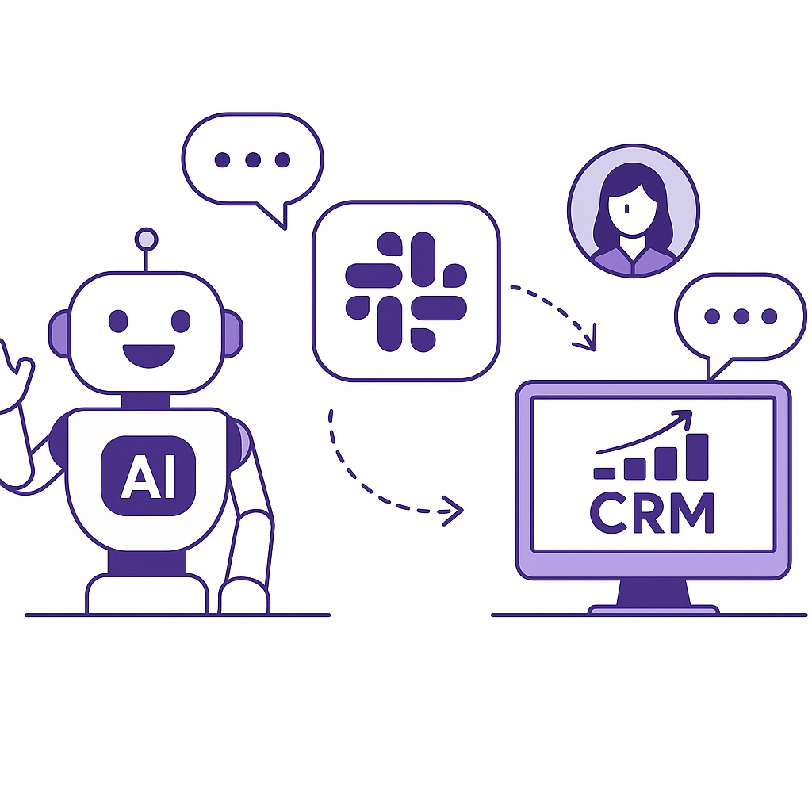
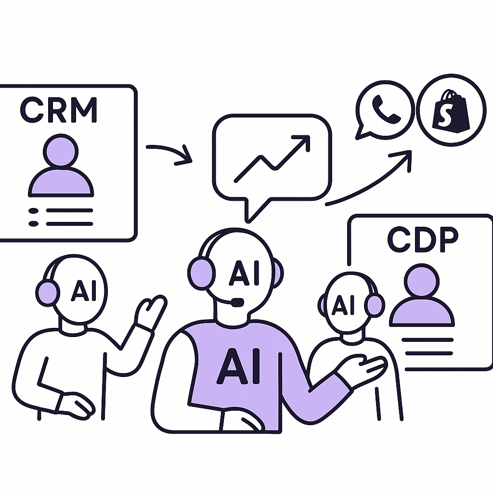
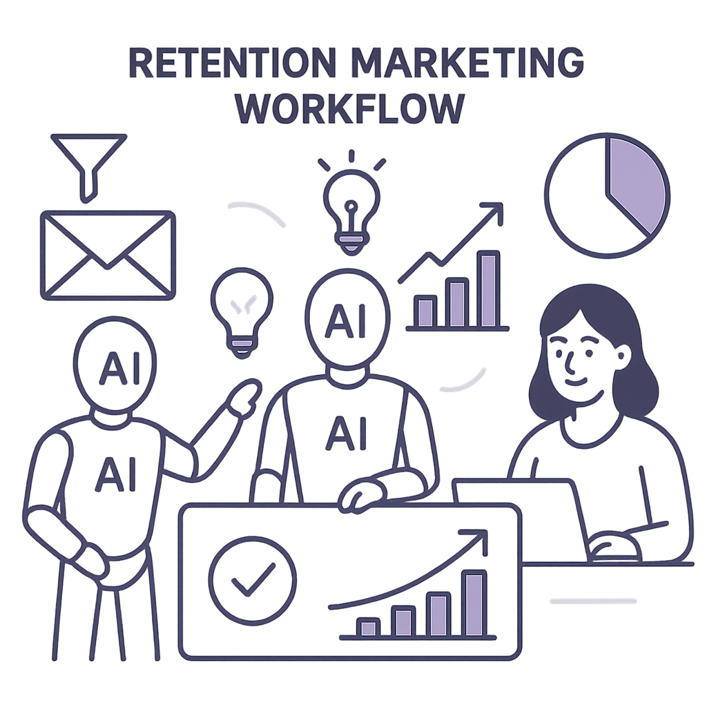
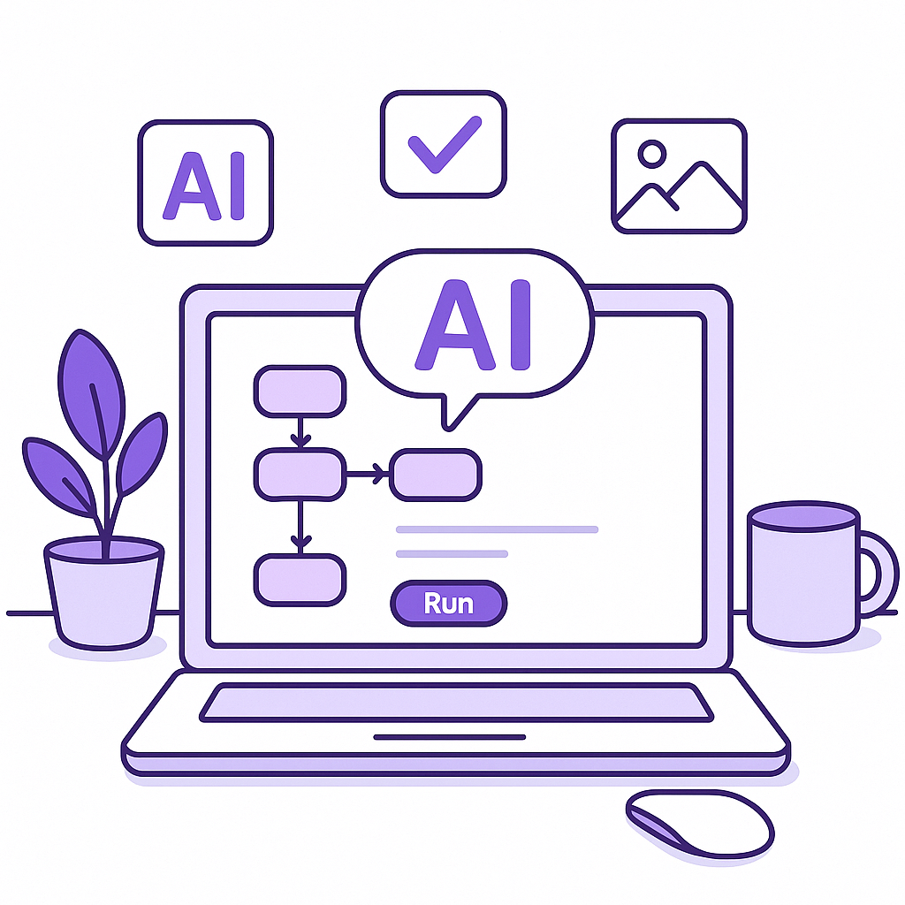
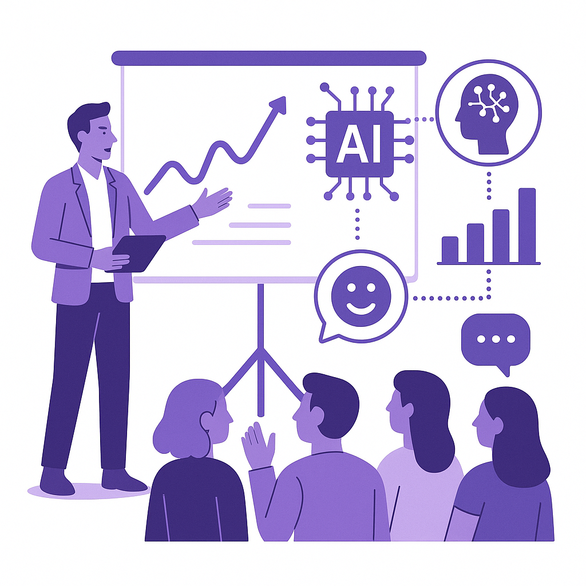

Publishing Recommendation
reviseThe drafted posts contain several instances of AI-generated tone and overuse of buzzwords, which conflict with our brand voice's emphasis on clarity and precision.
Today's drafts cover significant AI industry developments, but the posts often drift into generic and AI-generated language. While the topics are relevant, they sometimes lack the concrete insights and practical advice that align with our brand voice. Tightening the focus and ensuring each post provides actionable takeaways will enhance their value and authenticity.
LinkedIn Posts (7)
1. Salesforce's new Slackbot AI agent and its impact on retention marketing ★ Purands solution · high priority
CTA: Have you integrated AI into your customer engagement strategies? Share your experience.

⬇ Download image{kind=link}
Image prompt · isometric-flat
Caption: AI-enhanced Slack integration for marketing.
Alternative hooks
- Salesforce's new Slackbot AI agent is shaking up workplace communication.
- How can a Slackbot AI agent transform retention marketing?
- AI is reshaping customer engagement-are you ready?
Research behind this post (sources, summaries & confidence)
Salesforce rolls out new Slackbot AI agent as it battles Microsoft and Google in workplace AI conf 0.70 · AI startups
Salesforce's new Slackbot AI agent marks a significant development in workplace AI and its competition with major tech companies. As Slack is a popular tool for customer engagement, this development could impact retention marketing strategies by enhancing customer communication and lifecycle messaging.
Sources & what I took from each
- Salesforce launches new Slackbot AI agent: Salesforce has introduced a new AI agent for Slack to improve workplace AI functionalities. ↗ read source
Examples
- {'claim': 'Salesforce competing with Microsoft and Google', 'support': "The launch is part of Salesforce's strategy to compete with major tech companies in the AI space.", 'url': 'https://venturebeat.com/technology/salesforce-rolls-out-new-slackbot-ai-agent-as-it-battles-microsoft-and'}
Original trend links
Risks / caveats
- Potential over-reliance on AI tools for communication
- Integration challenges with existing platforms
2. Listen Labs raises $69M after viral billboard hiring stunt to scale AI customer interviews ★ Purands solution · high priority
CTA: How are you leveraging AI to understand and engage your customers?

⬇ Download image{kind=link}
Image prompt · isometric-flat
Caption: AI-driven customer insights in action.
Alternative hooks
- Listen Labs raised $69M to boost AI customer interviews. But what's the real value?
- AI tools for customer interviews are getting major funding. How does this impact retention?
- What does $69M in AI investment mean for customer engagement strategies?
Research behind this post (sources, summaries & confidence)
Listen Labs raises $69M after viral billboard hiring stunt to scale AI customer interviews conf 0.60 · AI startups
Listen Labs' funding round is indicative of the growing investment in AI-driven customer engagement solutions. This trend is critical for retention marketing as it emphasizes the importance of understanding customer needs through innovative AI-driven interviews.
Sources & what I took from each
- Listen Labs raises $69M: The funding round was reported in the context of a viral marketing stunt to promote their AI customer interview tools. ↗ read source
Statistics
- {'claim': 'Amount raised', 'support': '$69 million was raised in this funding round.'}
Original trend links
Risks / caveats
- Potential for overvaluation based on marketing stunts
- Challenges in scaling AI interview technologies
3. AI detectors are creating a new era of distrust ★ Purands solution · high priority
CTA: How do you see AI transparency shaping customer trust?

⬇ Download image{kind=link}
Image prompt · isometric-flat
Caption: Building trust with transparent AI.
Alternative hooks
- AI detectors are sparking skepticism.
- Distrust in AI is on the rise.
- Can AI-driven marketing survive the trust crisis?
Research behind this post (sources, summaries & confidence)
AI detectors are creating a new era of distrust conf 0.60 · AI industry
The rise of AI detectors and the resulting distrust could affect customer perceptions and trust in AI-driven marketing strategies. It is crucial for retention marketers to address these concerns to maintain customer loyalty.
Sources & what I took from each
- AI detectors are causing distrust: The article discusses how AI detectors are increasing skepticism toward AI-generated content. ↗ read source
Original trend links
Risks / caveats
- Erosion of trust in AI technologies
- Potential backlash against AI-driven processes
4. Google's AI shakeup suggests it may be prioritizing AI diffusion over frontier-model leadership ★ Purands solution · high priority
CTA: How do you see AI's role in enhancing customer retention strategies evolving?
Alternative hooks
- Google's AI strategy is shifting - but what does it mean for your business?
- Are broader AI tools the key to better retention marketing?
- How does Google's new AI focus translate to real-world business gains?
Research behind this post (sources, summaries & confidence)
Google's AI shakeup suggests it may be prioritizing AI diffusion over frontier-model leadership conf 0.50 · AI industry
Google's strategic shift towards AI diffusion could have significant implications for the development and deployment of AI technologies in business, including retention marketing. This shift may influence how AI tools are integrated into customer engagement and data platforms.
Sources & what I took from each
- Google's AI strategic shift: Reports suggest Google is focusing on broader diffusion of AI technologies rather than concentrating on cutting-edge model development. ↗ read source
Original trend links
Risks / caveats
- Potential lag in frontier AI model development
- Challenges in maintaining a leadership position in AI
5. Anthropic launches Cowork, a Claude Desktop agent that works in your files — no coding required
CTA: What are your thoughts on no-code AI tools for business?

⬇ Download image{kind=link}
Image prompt · isometric-flat
Caption: No-code AI solutions for business.
Alternative hooks
- Imagine using AI without writing a single line of code.
- AI integration just got a whole lot easier.
- Unlock your desktop's potential with no-code AI.
Research behind this post (sources, summaries & confidence)
Anthropic launches Cowork, a Claude Desktop agent that works in your files — no coding required conf 0.80 · AI industry
The launch of Cowork by Anthropic showcases the trend towards low-code/no-code AI solutions, which are becoming increasingly important for businesses looking to integrate AI capabilities without extensive technical expertise. This aligns with the need for accessible tools in retention marketing.
Sources & what I took from each
- Anthropic launches Cowork: Cowork is a new no-code AI solution by Anthropic, designed to work within desktop environments. ↗ read source
Examples
- {'claim': 'No coding required for integration', 'support': 'The tool allows users to utilize AI without needing to code, making it accessible for non-technical users.', 'url': 'https://venturebeat.com/technology/anthropic-launches-cowork-a-claude-desktop-agent-that-works-in-your-files-no'}
Original trend links
Risks / caveats
- Potential limitations in functionality compared to custom-coded solutions
- Security concerns with desktop integration
6. Home Depot reshuffles leadership to accelerate tech innovation
CTA: How do you think leadership changes impact tech adoption in businesses?
Alternative hooks
- Home Depot's leadership shake-up signals a tech-driven future.
- Why did Home Depot reshuffle its leadership? Innovation.
- Leadership changes at Home Depot spotlight tech integration.
Research behind this post (sources, summaries & confidence)
Home Depot reshuffles leadership to accelerate tech innovation conf 0.60 · Product management
Home Depot's focus on tech innovation underscores the importance of integrating advanced technologies into business operations, including retention marketing efforts. This trend could influence how companies structure their product management strategies.
Sources & what I took from each
- Home Depot reshuffles leadership: Home Depot is reported to have made leadership changes to boost tech innovation. ↗ read source
Original trend links
Risks / caveats
- Potential disruption during leadership transition
- Uncertain impact on long-term tech strategy
7. OpenAI acquires presentation startup NextSlide
CTA: How do you see AI enhancing presentations in your field?

⬇ Download image{kind=link}
Image prompt · isometric-flat
Caption: AI in dynamic presentations.
Alternative hooks
- OpenAI's latest move? Acquiring an AI presentation startup.
- AI-powered presentations: OpenAI's new frontier.
- How could AI reshape the way we present ideas?
Research behind this post (sources, summaries & confidence)
OpenAI acquires presentation startup NextSlide conf 0.50 · AI industry
OpenAI's acquisition of NextSlide indicates an expansion into AI-enhanced presentation tools, which could be leveraged for customer engagement and education in retention marketing strategies.
Sources & what I took from each
- OpenAI acquires NextSlide: OpenAI's acquisition is reported as a move to expand their AI tools into presentation technologies. ↗ read source
Original trend links
Risks / caveats
- Integration challenges with existing AI tools
- Potential over-reliance on AI for presentations
Today's Trends
| # | Trend | Category | Why it matters |
|---|---|---|---|
| 1 | AI assistant hacks gym website in first known Australian autonomous cyber attack
source source |
AI industry | This incident highlights the real-world implications of AI security vulnerabilities, especially as AI becomes more integrated into business operations. It underscores the need for robust security measures in AI applications, particularly relevant to retention marketing platforms that handle sensitive customer data. |
| 2 | Salesforce rolls out new Slackbot AI agent as it battles Microsoft and Google in workplace AI
source |
AI startups | Salesforce's new Slackbot AI agent marks a significant development in workplace AI and its competition with major tech companies. As Slack is a popular tool for customer engagement, this development could impact retention marketing strategies by enhancing customer communication and lifecycle messaging. |
| 3 | Listen Labs raises $69M after viral billboard hiring stunt to scale AI customer interviews
source |
AI startups | Listen Labs' funding round is indicative of the growing investment in AI-driven customer engagement solutions. This trend is critical for retention marketing as it emphasizes the importance of understanding customer needs through innovative AI-driven interviews. |
| 4 | Anthropic launches Cowork, a Claude Desktop agent that works in your files — no coding required
source |
AI industry | The launch of Cowork by Anthropic showcases the trend towards low-code/no-code AI solutions, which are becoming increasingly important for businesses looking to integrate AI capabilities without extensive technical expertise. This aligns with the need for accessible tools in retention marketing. |
| 5 | Google's AI shakeup suggests it may be prioritizing AI diffusion over frontier-model leadership
source |
AI industry | Google's strategic shift towards AI diffusion could have significant implications for the development and deployment of AI technologies in business, including retention marketing. This shift may influence how AI tools are integrated into customer engagement and data platforms. |
| 6 | AI detectors are creating a new era of distrust
source |
AI industry | The rise of AI detectors and the resulting distrust could affect customer perceptions and trust in AI-driven marketing strategies. It is crucial for retention marketers to address these concerns to maintain customer loyalty. |
| 7 | Tencent's Team Memory shares AI agent memory across a team — with no governance yet for when it's wrong
source |
AI startups | Tencent's approach to AI memory sharing highlights the challenges and opportunities in collaborative AI applications. Understanding how AI agents collaborate could lead to more effective customer engagement strategies. |
| 8 | OpenAI acquires presentation startup NextSlide
source |
AI industry | OpenAI's acquisition of NextSlide indicates an expansion into AI-enhanced presentation tools, which could be leveraged for customer engagement and education in retention marketing strategies. |
| 9 | Home Depot reshuffles leadership to accelerate tech innovation
source |
Product management | Home Depot's focus on tech innovation underscores the importance of integrating advanced technologies into business operations, including retention marketing efforts. This trend could influence how companies structure their product management strategies. |
| 10 | AI safety test is becoming a safety risk
source |
AI industry | The concerns about AI safety tests becoming risks highlight the need for improved safety standards and regulations, which are critical for the responsible deployment of AI in retention marketing platforms. |
Risk Assessment
- Potential overstatement of AI capabilities in the Salesforce Slackbot post.
- Generic claims about AI tools and processes in multiple posts, lacking specific examples or evidence.
Suggested LinkedIn Comments (30)
Open each post, then paste the copied comment. Nothing is posted automatically.
1. opinion · rss:techcrunch.com — The AI-focused hedge fund is still making some big bets.
Post by: rss:techcrunch.com
Why it works: It offers a clear opinion on the complexities of AI in finance, adding depth to the discussion.
↗ Open LinkedIn post to paste comment2. insight · rss:techcrunch.com — Programming with Claude Code will soon require even less human oversight.
Post by: rss:techcrunch.com
Why it works: The comment highlights the need for balance between automation and quality control, providing a nuanced perspective.
↗ Open LinkedIn post to paste comment3. expansion · rss:techcrunch.com — Welcome back to TechCrunch Mobility, your hub for the future of transportation a
Post by: rss:techcrunch.com
Why it works: This expands the discussion beyond the obvious, adding practical applications of AI in transportation.
↗ Open LinkedIn post to paste comment4. insight · rss:techcrunch.com — On the latest episode of Equity, we spoke to Jill Lepore about "government by ma
Post by: rss:techcrunch.com
Why it works: It provides a thoughtful reflection on the potential pitfalls of AI in policy-making, encouraging deeper consideration.
↗ Open LinkedIn post to paste comment5. insight · rss:techcrunch.com — AI agents are escaping cybersecurity testing environments and reaching real-worl
Post by: rss:techcrunch.com
Why it works: It underscores the need for regulatory advancement, aligning with real-world implications of AI development.
↗ Open LinkedIn post to paste comment6. opinion · rss:techcrunch.com — A security researcher has designed an algorithm that can create computer-generat
Post by: rss:techcrunch.com
Why it works: This comment provokes thought on the intersection of technology and ethics, adding a philosophical layer to the discussion.
↗ Open LinkedIn post to paste comment7. expansion · rss:techcrunch.com — More than 20 years ago, King's Cross was one of the seediest area's in London. N
Post by: rss:techcrunch.com
Why it works: It connects urban development with sustainable tech integration, broadening the narrative to include future-forward thinking.
↗ Open LinkedIn post to paste comment8. opinion · rss:techcrunch.com — As part of a planned Texas data center, Amazon is investing in an on-site power
Post by: rss:techcrunch.com
Why it works: The comment critically examines the environmental impact of tech infrastructure, adding depth to the corporate sustainability conversation.
↗ Open LinkedIn post to paste comment9. insight · rss:techcrunch.com — NextSlide says its team members are now working on ChatGPT.
Post by: rss:techcrunch.com
Why it works: It provides a lens on industry trends and workforce adaptability, offering a strategic view of market movements.
↗ Open LinkedIn post to paste comment10. insight · rss:techcrunch.com — X is winding down its existing Revenue Sharing program.
Post by: rss:techcrunch.com
Why it works: The comment draws attention to the need for strategic evolution in business models, relevant to tech industry dynamics.
↗ Open LinkedIn post to paste comment11. insight · rss:www.theverge.com — Sadly, there hasn't been a new episode of No Dogs in Space since July of 2024. P
Post by: rss:www.theverge.com
Why it works: The comment connects the podcast issue to a broader trend in content management, adding a practical AI perspective.
↗ Open LinkedIn post to paste comment12. insight · rss:www.theverge.com — Earlier this week, the Alaskan cruise ship Wilderness Legacy rescued a small ski
Post by: rss:www.theverge.com
Why it works: This adds a layer of analysis about logistical assumptions and technology's role in clarifying them.
↗ Open LinkedIn post to paste comment13. opinion · rss:www.theverge.com — Four weeks ago, San Francisco 49ers coach Kyle Shanahan was involved in an accid
Post by: rss:www.theverge.com
Why it works: It offers a clear stance on autonomous technology, highlighting a key safety issue.
↗ Open LinkedIn post to paste comment14. insight · rss:www.theverge.com — In 2018 I bet my reputation and self-worth on a huge crowdfunded game design pro
Post by: rss:www.theverge.com
Why it works: The comment ties the author's experience to a broader lesson on tech use in project management.
↗ Open LinkedIn post to paste comment15. expansion · rss:www.theverge.com — This is The Stepback, a weekly newsletter breaking down one essential story from
Post by: rss:www.theverge.com
Why it works: It expands on the post's theme by emphasizing the broader impact of AI's evolution.
↗ Open LinkedIn post to paste comment16. insight · rss:www.theverge.com — X is ending its controversial revenue-sharing program for content creators, whic
Post by: rss:www.theverge.com
Why it works: The comment provides a timely perspective on platform strategy and creator engagement.
↗ Open LinkedIn post to paste comment17. respectful challenge · rss:www.theverge.com — To power its new West Texas data center, Amazon is investing in the construction
Post by: rss:www.theverge.com
Why it works: This challenges Amazon's approach by highlighting the tension between growth and sustainability.
↗ Open LinkedIn post to paste comment18. insight · rss:www.theverge.com — Buc-ee's became something of a viral sensation during the World Cup, but it has
Post by: rss:www.theverge.com
Why it works: This sheds light on the broader implications of aggressive brand protection strategies.
↗ Open LinkedIn post to paste comment19. insight · rss:www.theverge.com — Tom Vek burst onto the scene in 2005 with his album We Have Sound, which garnere
Post by: rss:www.theverge.com
Why it works: The comment connects Vek's career to a universal truth about artistic impact and evolution.
↗ Open LinkedIn post to paste comment20. insight · rss:www.theverge.com — Finding a good laptop under $500 was hard enough before RAMageddon. They nearly
Post by: rss:www.theverge.com
Why it works: This insight ties Apple's strategy to broader market dynamics, emphasizing the impact of strategic product development.
↗ Open LinkedIn post to paste comment21. insight · rss:feeds.arstechnica.com — The massive Toba eruption seems to have had little climate impact.
Post by: rss:feeds.arstechnica.com
Why it works: Adds perspective on the evolving understanding of natural events and their impact.
↗ Open LinkedIn post to paste comment22. opinion · rss:feeds.arstechnica.com — About 90 percent of the distance driven by Perseverance has been autonomous.
Post by: rss:feeds.arstechnica.com
Why it works: Highlights the significance of autonomous technology in challenging environments.
↗ Open LinkedIn post to paste comment23. insight · rss:feeds.arstechnica.com — Open source WeatherNext model can make accurate predictions with lower-resolutio
Post by: rss:feeds.arstechnica.com
Why it works: Emphasizes how technological advances can democratize access to critical tools.
↗ Open LinkedIn post to paste comment24. expansion · rss:feeds.arstechnica.com — Copernicus Browser adds wildfire visualization amid record wildfire season.
Post by: rss:feeds.arstechnica.com
Why it works: Expands on the practical benefits of real-time data visualization during crises.
↗ Open LinkedIn post to paste comment25. insight · rss:feeds.arstechnica.com — Six deaths reported among screwworm cases, one directly attributed to the flies.
Post by: rss:feeds.arstechnica.com
Why it works: Provides a broader context on the need for integrated approaches in public health.
↗ Open LinkedIn post to paste comment26. opinion · rss:feeds.arstechnica.com — New Mexico judge orders $567M fund to help address youth mental health crisis.
Post by: rss:feeds.arstechnica.com
Why it works: Highlights the importance of financial investment in addressing mental health issues.
↗ Open LinkedIn post to paste comment27. insight · rss:feeds.arstechnica.com — Fitted with telescopes, the plane did our longest imaging of the Sun's corona.
Post by: rss:feeds.arstechnica.com
Why it works: Connects the method to its potential impact on understanding solar phenomena.
↗ Open LinkedIn post to paste comment28. insight · rss:feeds.arstechnica.com — 19 new maps continue the story from MachineGames' other campaign additions.
Post by: rss:feeds.arstechnica.com
Why it works: Explains the broader impact of game expansions on player engagement.
↗ Open LinkedIn post to paste comment29. opinion · rss:feeds.arstechnica.com — DOGE's inflated "Wall of Receipts": 96% of grant savings unverifiable, GAO says.
Post by: rss:feeds.arstechnica.com
Why it works: Emphasizes the importance of transparency in the evolving digital financial landscape.
↗ Open LinkedIn post to paste comment30. opinion · rss:feeds.arstechnica.com — Gurman report claims OpenAI confirmed the speaker is not an Apple ripoff.
Post by: rss:feeds.arstechnica.com
Why it works: Focuses on the importance of originality in tech product development.
↗ Open LinkedIn post to paste comment